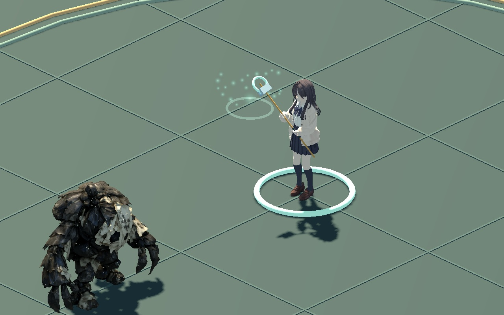
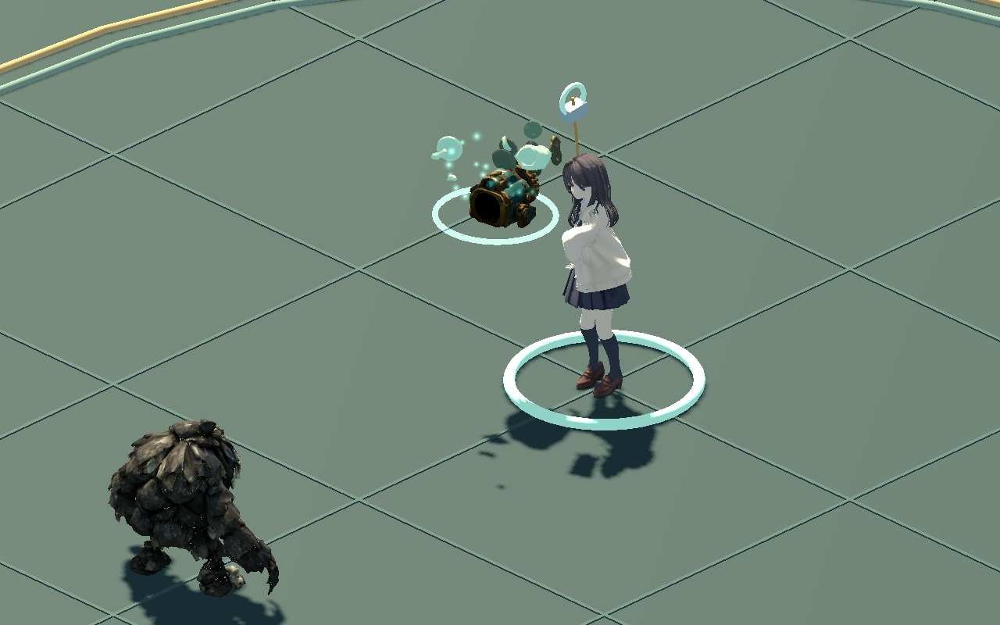
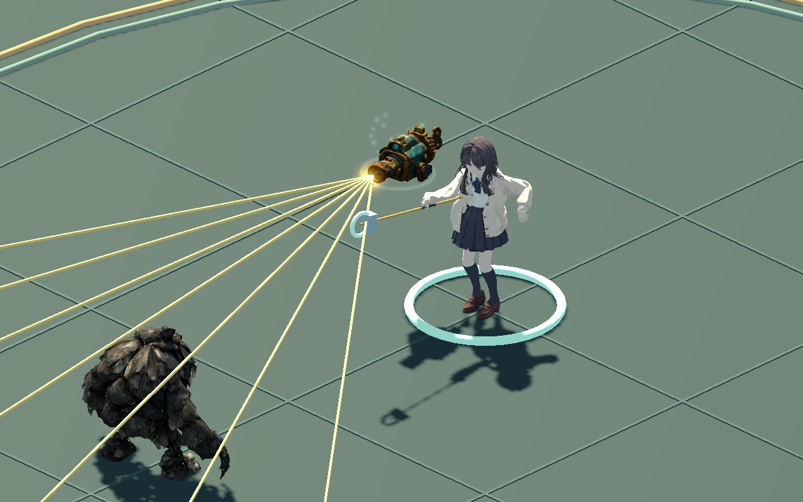
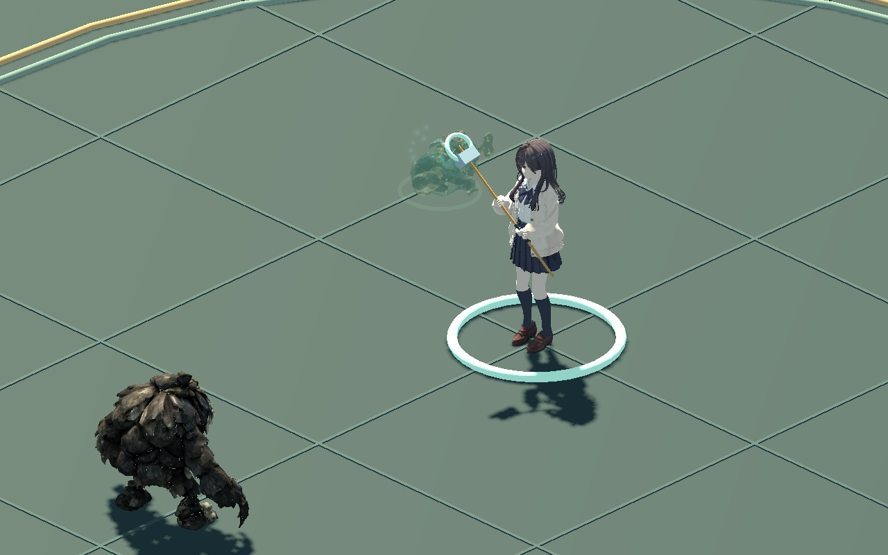
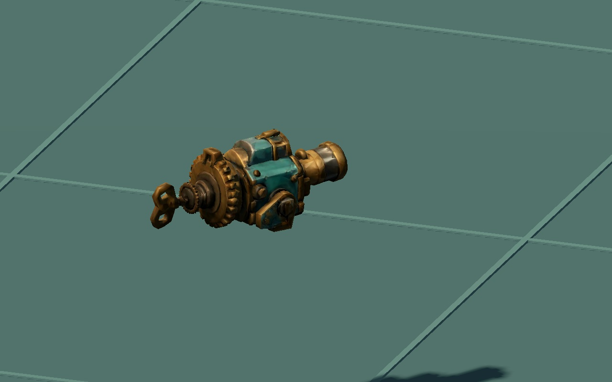

WITCH / SCATTER CANNON 01
허공에서 조립하고, 발사한 뒤 사라집니다
마녀 오른쪽 앞에 약실·톱니·포신이 빠르게 모이고, 완성된 총구에서 산탄이 나갑니다. 짧은 반동 뒤 부품이 빛으로 흩어집니다.
우클릭 산탄에 연결40개 분할 부품총구와 발사 원점 일치

기본 배치의 우클릭으로 시험할 수 있습니다. 기본 발동은 기존과 같은 0.125초이며, 발사 후 약 0.45초에 총기가 사라집니다. 조립을 자세히 보려면 0.25배 재생을 선택하세요.
생성 → 발사 → 소멸

약실과 구동부부터 빠르게 조립
총구 섬광과 짧은 산탄 궤적
반동 뒤 빛으로 해체발사 위치
평소에는 앞쪽 0.62m·오른쪽 0.52m, 높이 1.12m를 기준으로 둡니다. 가까운 적이 있으면 총구를 뒤로 당기고 높여 적을 지나쳐 생성하지 않게 합니다. 오른쪽이 벽에 막히면 왼쪽이나 위쪽 위치를 확인합니다.
산포각의 시작점과 벽 차단 판정은 실제 총구를 따릅니다. 최대 사거리는 플레이어 기준 8m로 유지하며, 탄선도 벽에서 끊깁니다. 시전 중 강한 피격으로 중단되면 생성된 부품만 해체되고 발사·마나 소모가 일어나지 않습니다.
총기 외형과 검증

기존 포탑의 상부를 분리한 8,732삼각형 사본 · 원본과 질감 보존총구·피해·탄선 연결, 빠른 시전, 취소/실패/일시정지/재시작, 근접 대상과 벽을 검사했습니다. 기존 누르기/연타·경직/막기·명중/치명·접근 시전·공구 연계 회귀까지 436개 검사 통과. 실제 게임 7장면과 외형 1장, 총 344장 렌더입니다. 이 페이지는 무음이며 게임은 기존 기계음을 사용합니다.
피해량·비용·쿨다운·발동 시점은 유지합니다. 다만 부채꼴 꼭짓점이 캐릭터 중심에서 총구로 옮겨져 가장자리와 엄폐물 근처의 명중 결과는 달라질 수 있습니다. 모든 모서리·자세에서 총기 전체의 충돌 여유를 보장하는 검사는 아닙니다.
검증과 파일 해시 · 작업 인계